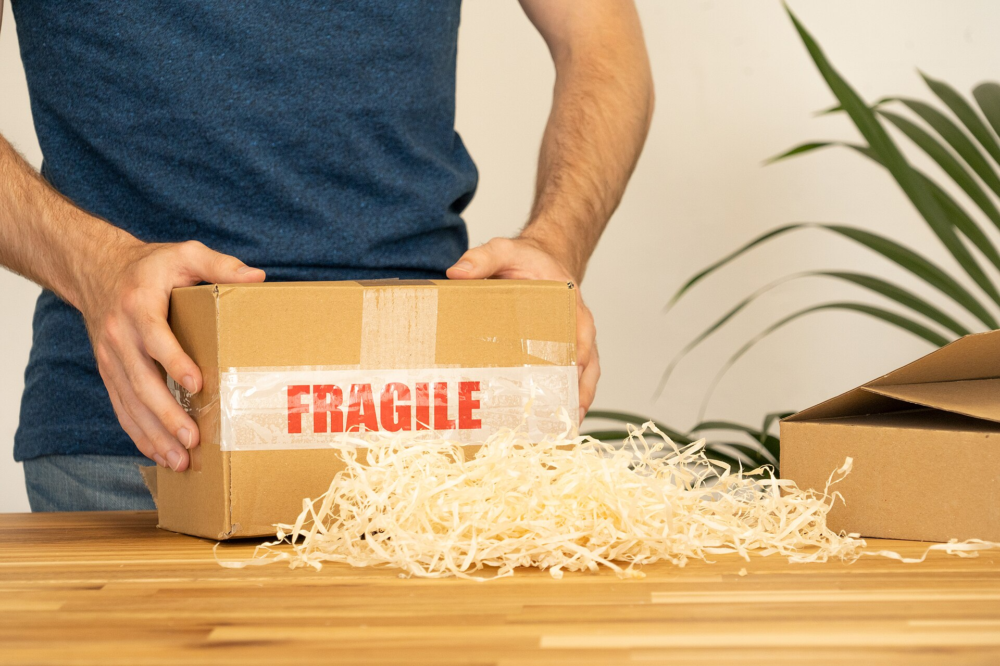

배송비를 낮추는 방법은 하나입니다. 같은 목적지로 가는 소포를 한 거점에 모아 한 번에 실어 보내는 것. 모으는 양이 많아질수록 상자 한 개당 드는 운송·집하 비용이 줄어듭니다.
열 개를 한 번에 실으면 한 개당 운송비가 낮아집니다.
각 소포는 본인 개인통관부호로 정상 가격을 신고하는 정식 통관입니다. 나눠 보내거나 숨기지 않습니다.
통관과 배송은 정식 등록된 국제특송사·관세법인이 맡습니다.
정확한 요율은 단일 공단 파일럿에서 실측해 확정·공개합니다.
고향봉투는 '면세'나 '세금 절약'을 약속하지 않습니다. 저렴함의 이유는 오직 '여럿이 함께 모아 보내는 것'입니다.
거점별로 마감 시간까지 소포를 모읍니다. 마감 전에 참여하면 이번 합배송에 함께 실립니다.
지도는 예시 위치입니다. 실제 거점은 파일럿에서 확정합니다.
고향 나라와 가까운 집하 거점을 고릅니다.
무엇을 보낼지 적으면 무게를 계산해 드립니다.
보낼 수 없는 물건은 이 단계에서 걸러 드립니다.
합배송으로 낮아진 예상 배송비를 보여드립니다.
결제금은 도착·수령이 확인될 때까지 안전하게 보관됩니다.
정해진 날 거점에 모아 한 번에 발송합니다.
나라마다 규정이 다릅니다. 업로드할 때 자동으로 확인해 드리고, 막히는 품목은 미리 알려드립니다.
번호가 없으면 예시로 확인해 보세요: GH-2609-NP-04821 · GH-2609-KH-01337
결제하신 금액은 정식 결제대행사(PG)가 안전하게 맡아 둡니다. 고향봉투는 여러분의 돈을 직접 걷거나 보관하지 않습니다. 소포가 도착해 수령이 확인되면 그때 정산됩니다.
그래서 '돈만 받고 사라지는' 사기를 구조적으로 막습니다.
기숙사 통역, 식당, 종교 모임처럼 이웃이 모이는 곳의 믿을 만한 분이 공동구매를 돕습니다.
“돈을 미리 안 걷고, 도착하면 정산된다니 안심돼요.” — 네팔, 향남
“혼자 보내던 걸 같이 보내니 배송비가 줄었어요.” — 캄보디아, 원곡
“네팔어로 되어 있어서 이해하기 쉬웠어요.” — 네팔, 김해
고향의 식품·특산품을 한국에서 함께 구매하는 역방향 공동구매를 준비하고 있습니다.
고향봉투는 공동구매 국제소포 서비스를 준비하는 팀입니다. 통관·운송은 정식 등록 파트너가, 결제는 라이선스 PG가 맡습니다.
QR을 찍으면 이 페이지가 열립니다.